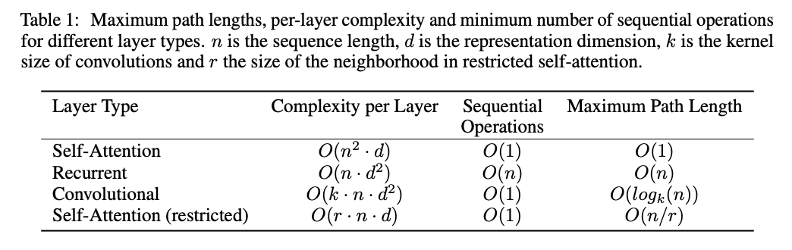

date: 2020-11-11 18:50:50
title: 15 Transformer - Why Attention
intro: “Attention Is All You Need” provides reasoning why Self-Attention may be so successful.
The intuition of why the Transformer architecture works so well on the machine translation task is due (according to the paper) to three fundamental reasons.
- Total computational complexity per layer
- Amount of computation that can be parallelized
- The path length between long-range dependencies.
As noted in table 1, the self attention layer connects all positions together with constant number of sequential operations, making longer term dependencies much easier for SGD to learn.

The table shows how both Convolution and Self-Attention lead to time for Sequential Operations, but Self-Attention excels at the time for Maximum Path Length.
As a side benefit, attention could lead to more interpretable models because the attention has direct correlation to inputs of the model; making visualization directly possible. As found in the paper, the various attention heads learn to detect things such as the “Who” or “Did What” and “To Whom”.